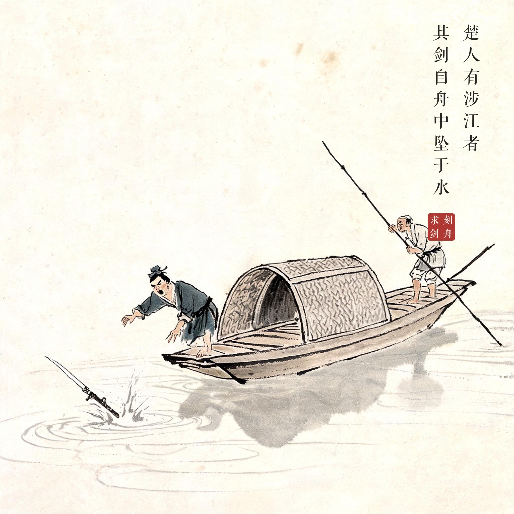
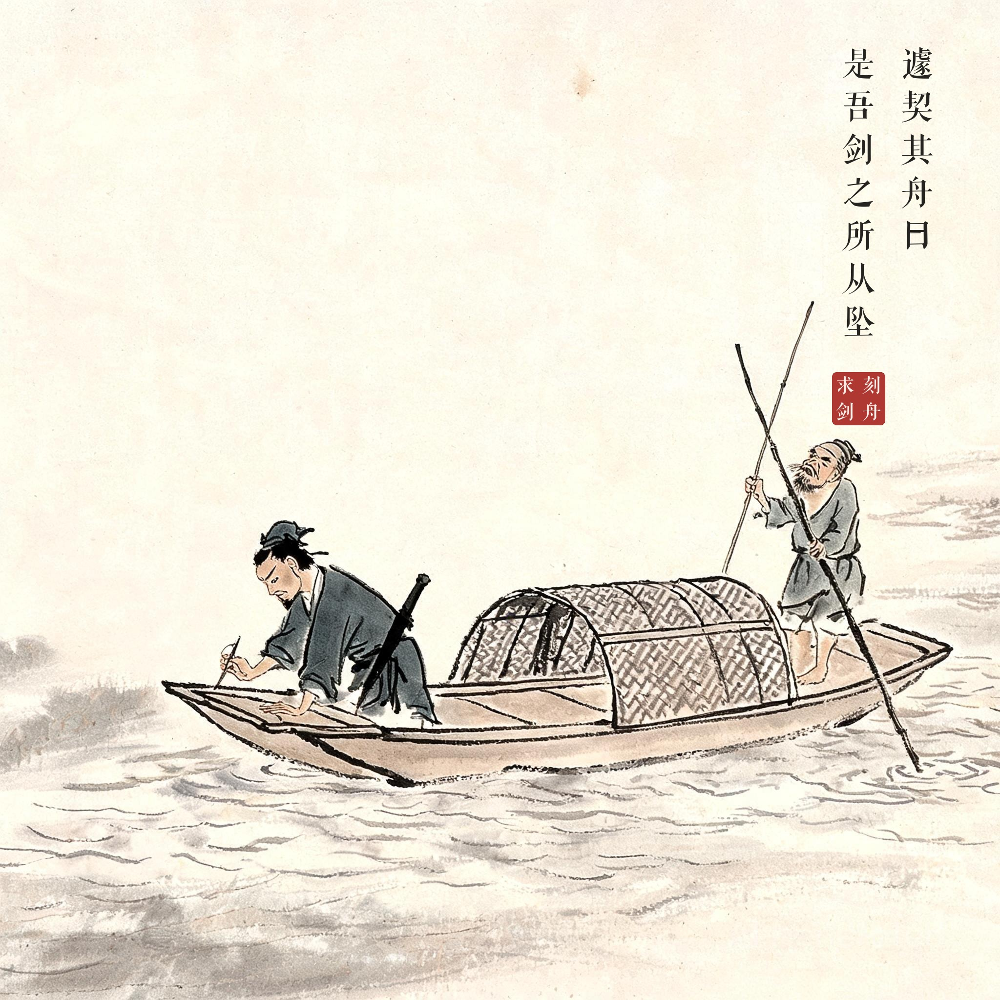
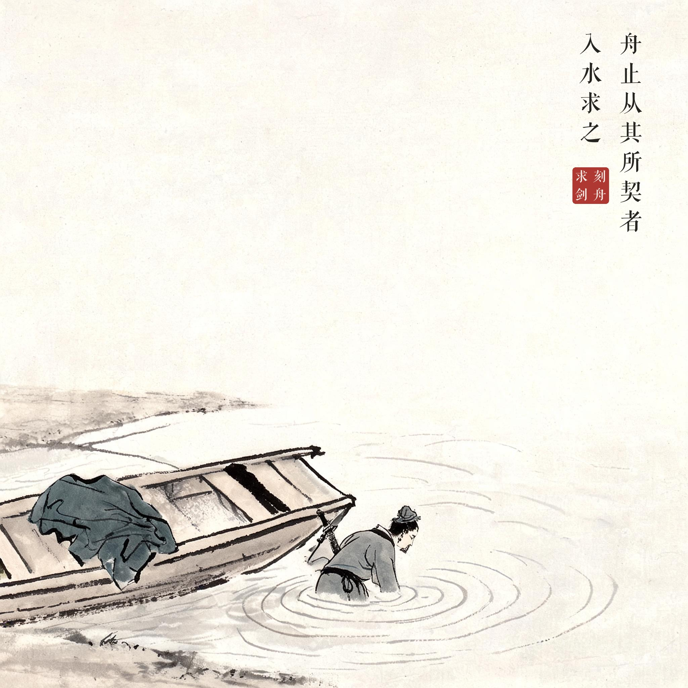
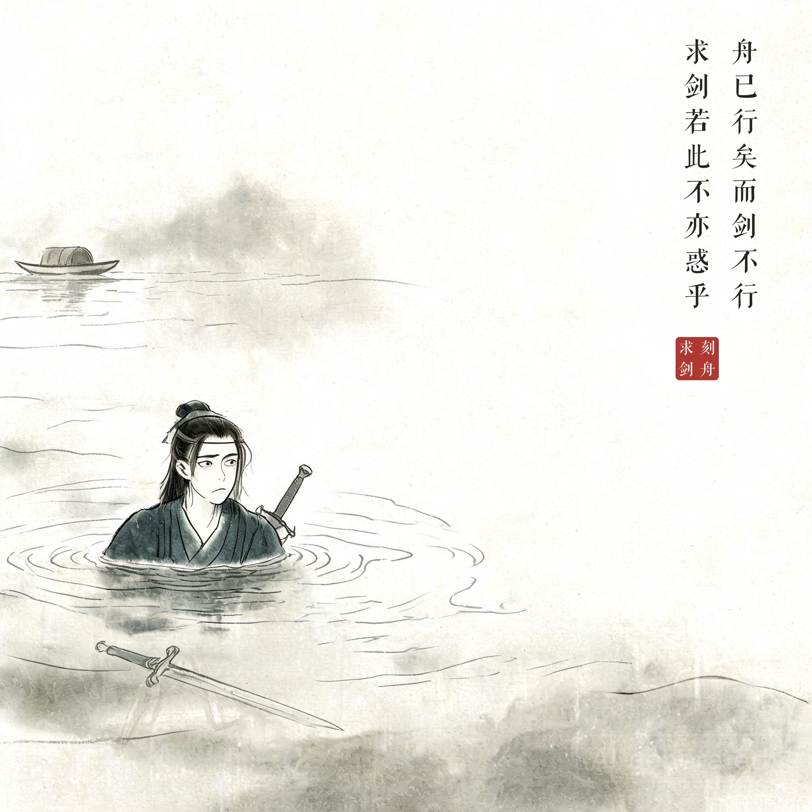

《吕氏春秋 · 察今》
楚人有涉江者，其剑自舟中坠于水，遽契其舟，曰：是吾剑之所从坠。舟止，从其所契者入水求之。舟已行矣，而剑不行，求剑若此，不亦惑乎。
有个楚国人渡江，他的剑从船上掉进了水里。他急忙在船舷上刻了个记号，说："这是我的剑掉下去的地方。"船靠岸停下后，他从刻记号的地方跳进水里找剑。船已经走了，剑却没有走——像这样找剑，岂不糊涂吗？
情况已经变化，却仍拘泥固执、墨守成规，不懂随情势调整，必然徒劳无功。